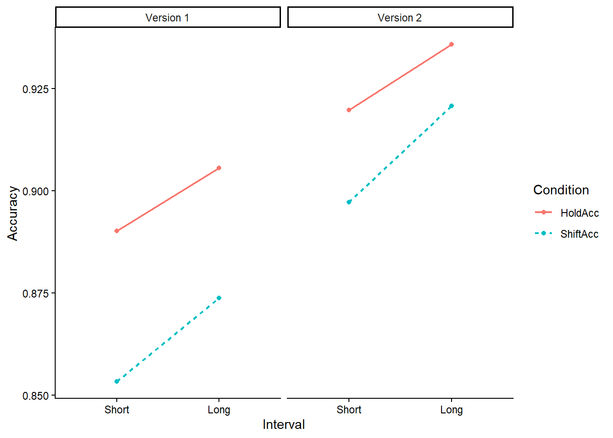

Portfolio 3
I am working with Dr. Sali on a project looking at emotions and attentional flexibility. In the test phase I assess participants’ readiness to shift their attention with a rapid serial visual presentation (RSVP) task. In the task, the shift/hold cue appears at either the short or the long interval, and those intervals were previously associated with either threatening or neutral images. There are two versions of the previous task, version 1 mostly have the threat at the short interval, while version 2 have the threat at the long interval.
I did the initial analysis in SPSS, with really ugly graphs. Now I want to recreate the graphs in r. I have a 2x2x2 design. I will have the time interval (short/long) on the x axis, the RT on the y axis, shift/hold as two separate lines, and versions as separate panels.
First, load the packages and data.
library(haven)
library(tidyverse)## ── Attaching core tidyverse packages ──────────────────────── tidyverse 2.0.0 ──
## ✔ dplyr 1.1.4 ✔ readr 2.1.6
## ✔ forcats 1.0.1 ✔ stringr 1.6.0
## ✔ ggplot2 4.0.1 ✔ tibble 3.3.1
## ✔ lubridate 1.9.4 ✔ tidyr 1.3.2
## ✔ purrr 1.2.1
## ── Conflicts ────────────────────────────────────────── tidyverse_conflicts() ──
## ✖ dplyr::filter() masks stats::filter()
## ✖ dplyr::lag() masks stats::lag()
## ℹ Use the conflicted package (<http://conflicted.r-lib.org/>) to force all conflicts to become errorsthe.data <- read_sav("TestPhase_18-68.sav")I don’t think I can plot directly from the format of the data I have now. So, I’ll convert the data from “wide” to “long” and extract the conditions.
data_long_RT <- the.data %>%
pivot_longer(
cols = c(Short_HoldRT, Short_ShiftRT,
Long_HoldRT, Long_ShiftRT),
names_to = "condition",
values_to = "RT"
)
data_long_RT <- data_long_RT %>%
separate(condition, into = c("short_long", "shift_hold"),
sep = "_") %>%
mutate(
short_long = factor(short_long, levels = c("Short", "Long")),
shift_hold = factor(shift_hold, levels = c("HoldRT", "ShiftRT"))
)
data_long_RT <- data_long_RT %>%
mutate(
shift_hold = recode(shift_hold,
"HoldRT" = "Hold",
"ShiftRT" = "Shift")
)
data_long_RT <- data_long_RT %>%
drop_na(RT)Now I can start graphing.
data_long_RT %>%
ggplot(
aes(
x = short_long,
y = RT,
group = shift_hold,
linetype = shift_hold,
color = shift_hold
)
) +
stat_summary(fun = mean, geom = "point") +
stat_summary(fun = mean, geom = "line", size = 0.8) +
facet_wrap(~version,
labeller = labeller(
version = c("1" = "Version 1",
"2" = "Version 2")
)) +
labs(
x = "Interval",
y = "Reaction Time",
linetype = "Condition",
color = "Condition"
) +
theme_classic()## Warning: Using `size` aesthetic for lines was deprecated in ggplot2 3.4.0.
## ℹ Please use `linewidth` instead.
## This warning is displayed once per session.
## Call `lifecycle::last_lifecycle_warnings()` to see where this warning was
## generated.
Here we have it! Next, I’ll do the same things with accuracy.
data_long_acc <- the.data %>%
pivot_longer(
cols = c(Short_HoldAcc, Short_ShiftAcc,
Long_HoldAcc, Long_ShiftAcc),
names_to = "condition",
values_to = "Acc"
)
data_long_acc <- data_long_acc %>%
separate(condition, into = c("short_long", "shift_hold"),
sep = "_") %>%
mutate(
short_long = factor(short_long, levels = c("Short", "Long")),
shift_hold = factor(shift_hold, levels = c("HoldAcc", "ShiftAcc"))
)
data_long_acc <- data_long_acc %>%
mutate(
shift_hold = recode(shift_hold,
"HoldRT" = "Hold",
"ShiftRT" = "Shift")
)
data_long_acc <- data_long_acc %>%
drop_na(Acc)
data_long_acc %>%
ggplot(
aes(
x = short_long,
y = Acc,
group = shift_hold,
linetype = shift_hold,
color = shift_hold
)
) +
stat_summary(fun = mean, geom = "point") +
stat_summary(fun = mean, geom = "line", size = 0.8) +
facet_wrap(~version,
labeller = labeller(
version = c("1" = "Version 1",
"2" = "Version 2")
)) +
labs(
x = "Interval",
y = "Accuracy",
linetype = "Condition",
color = "Condition"
) +
theme_classic()
Now we have both graphs!